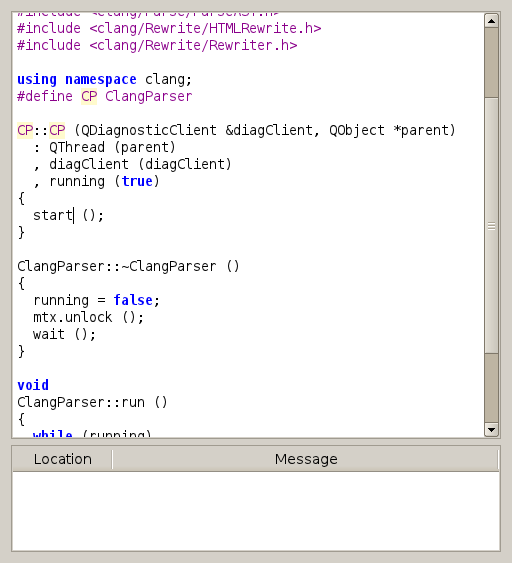
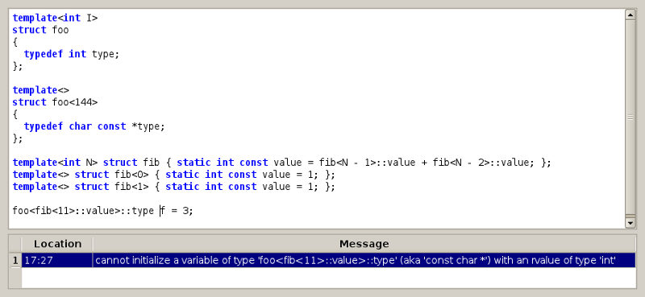

Clang IDE
Tiny C++ IDE with Clang integration.
Code editing
ClangIDE is currently a very minimalistic C++ editor. It uses Clang for syntax highlighting and direct feedback in case of errors. Since Clang's lexer doesn't know which identifiers name types, there is no highlighting of user defined types, yet.

Diagnostics
By double clicking the diagnostic, the editor jumps to the source location at which the error/warning occurred.
